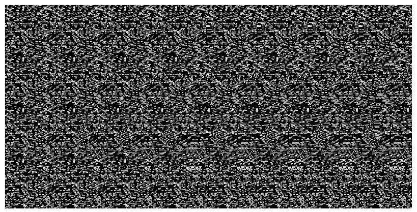
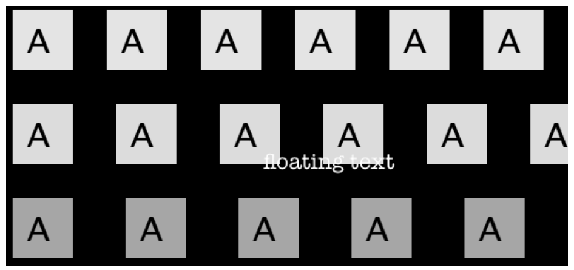
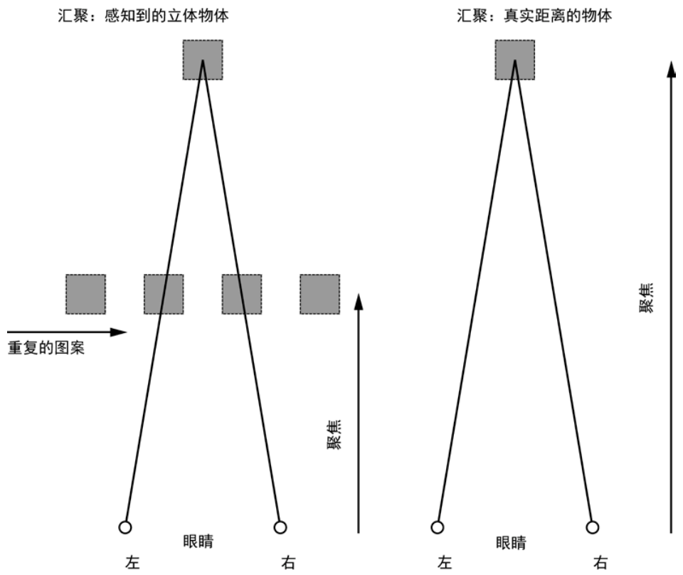
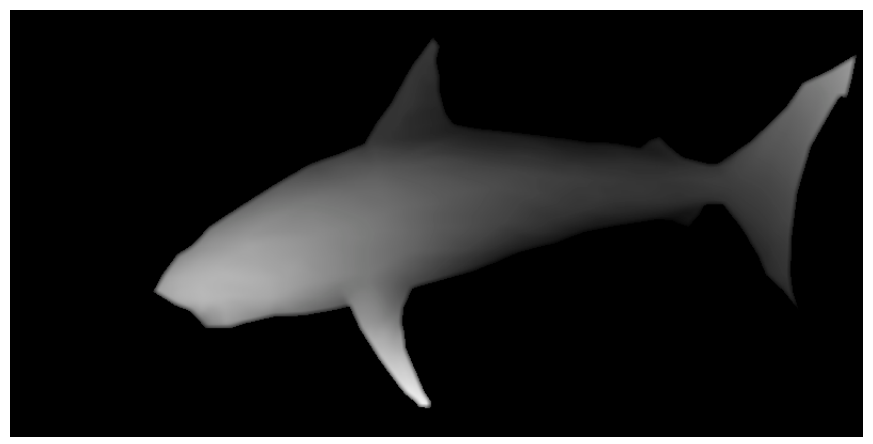
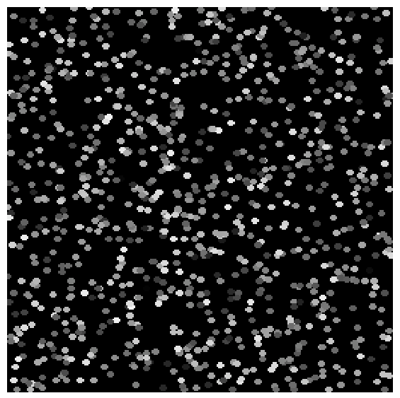
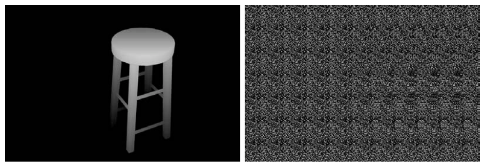
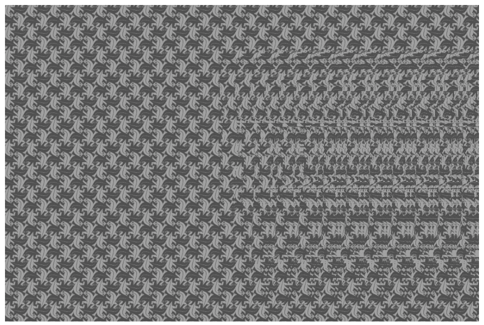
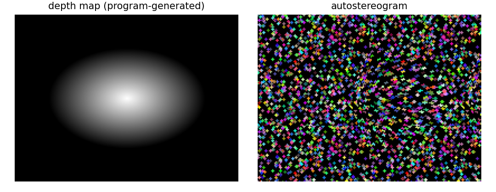
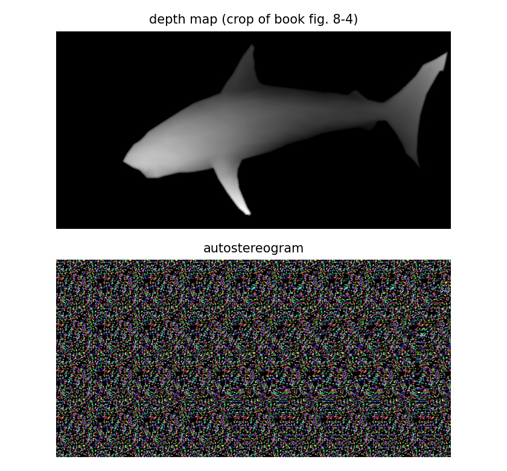

第 8 章 三维立体画#
本章解决：如何让一张平面图像"凸"出三维感——用深度图记录每个像素的远近，把平铺图案按深度值逐像素水平偏移，让大脑把图案间距解读成深度，从看似杂乱的随机点里看出一条立体的鲨鱼。 承上启下：上一章照片马赛克用 Pillow 把图像切块拼贴，本章继续用
Image.new、paste、convert('L')这套词汇，并新增load()像素访问加双重循环的逐像素改写模式；下一章进入 OpenGL 的真三维世界——本章在二维平面上"伪造"深度，那里将用真正的三维坐标去渲染它。
📓 章代码：nb/ch08.ipynb（分节代码；ch01–08 含固定种子实跑输出，ch09–14 为完整实现待硬件环境）
盯着图 8.1 看一分钟。除了随机的点，还看到别的什么吗？

图 8.1 就是一张三维立体画（Autostereogram）：制造三维假象的二维图像，通常包含一些重复的图案，仔细观察会被大脑解释为三维。看不到任何效果别担心——作者自己也花了一段时间、做了一些尝试才看到；印刷版是灰度的，难以对焦时可以到本书 GitHub 仓库（electronut/pp）找彩色版本看。答案原书标题脚注已经挑明：隐藏图像是一条鲨鱼。
拓展：怎么「看」——墙眼观看法
本项目生成的立体画设计为用墙眼（wall-eye）方式观看：让眼睛聚焦在图像后面的一个点（比如墙上）。有点神奇——一旦在这些图案中感知到某样东西，眼睛就会自动将它作为关注的焦点，三维图像"锁定"之后，你很难对它视而不见。仍然看不到的话，看 Gene Levin 的文章《How to View Stereograms and Viewing Practice》（colorstereo.com/texts_.txt/practice.htm），或许有帮助。后面 8.5 节的两张实跑图也请用这个方式欣赏。
本项目将用 Python 创建一张三维立体画，涉及的概念：
- 线性间距和深度知觉；
- 深度图；
- 用 Pillow 创建和编辑图像；
- 用 Pillow 绘制图像。
8.0 本章导图#
8.1 工作原理#
三维立体画的工作原理是改变图像中图案之间的线性间距，从而产生深度的错觉。观看立体画中的重复图案时，大脑会将间距解释为深度信息——如果有多个图案和不同的间距，尤其会这样。
8.1.1 感知三维立体画中的深度#
如果双眼汇聚在图像背后一个假想的点，大脑将左眼看到的一些点与右眼看到的另一些点匹配起来，就会看到这些点位于图像之后的一个平面上。到该平面的感知距离取决于图案间距的大小。图 8.2 给出了直观演示：三行 A，每行之间的距离相等，但水平间距从上至下增加。

用墙眼方式看图 8.2：最上面一行应该出现在纸后面（最近），中间行在第一行后面一点，底部一行出现在最远的位置；文本 "floating text" 应该看起来"浮在"这几行顶部。规律很干脆——间距越小，感知位置越近；间距越大，越远。
拓展：为什么间距越大，看到的位置越远
双眼相距约 6.5 厘米。用墙眼方式把视轴汇聚到纸后距离为 D 的假想点时，两条视线与纸面的交点会拉开一段水平距离——D 越大，交点拉得越开。大脑要把"左眼看到的某个特征"与"右眼看到的下一个重复特征"配对：重复图案的间距 p 越大，需要越远的汇聚点才能让两个特征对齐，感知位置就越远；p 越小则越近。立体画的把戏正是利用这种强制配对——大脑无法拒绝把重复图案配成对，配对的结果就被解释成了深度。
为什么大脑会把图案间距解读为深度？通常看远处物体时，双眼协作，聚焦并汇聚在同一点，双眼向内转、直接指向目标点。但用墙眼方式观看立体画时，聚焦和汇聚发生在不同的位置：眼睛专注于立体画的纸面（聚焦在图案上），大脑却把重复的模式看成来自同一个虚拟对象，于是双眼汇聚到图像背后的一个点，见图 8.3。解耦的聚焦和汇聚叠加在一起，让你在立体画中看到深度。

三维立体画的感知深度取决于像素的水平间距。图 8.2 中第一行具有最近的间隔，所以出现在其他行的前面。如果点的间距在图像中是变化的，大脑会认为每个点处于不同的深度——于是看到一个虚拟的三维图像。
8.1.2 深度图#
深度图（Depth Map）是这样一幅图像：其中每个像素的值表示深度值，即从眼睛到该像素所表示对象部分的距离。深度图往往表现为一幅灰度图——亮的区域表示近的点，暗的区域表示远的点，如图 8.4 所示。

注意图 8.4 里鲨鱼的鼻子是全图最亮的部分，似乎最接近你；朝向尾部的较暗区域看起来最远。深度图的每个像素存储一个深度值，值的分辨率取决于表示它的位数——本章采用常见的 8 位图像，深度值范围是 [0, 255]。
顺带一提：图 8.4 正是用来创建图 8.1 那张立体画的深度图——学完本章你就能自己复现这件事。
编码的依据是一条观察：在图像中，水平偏移被认为是深度。所以，如果按照对应像素深度值的比例，把图案图像中的像素向右偏移，就会对该像素产生与深度图一致的深度知觉；对所有像素都这样做，整个深度图就被编码进了图像——三维立体画就此生成。本项目的代码遵循以下步骤：
- 读入深度图；
- 读入一幅平铺图像，或创建一个"随机点"平铺图像；
- 通过重复平铺图像创建一幅新图像，其尺寸与深度图一致；
- 对新图像中的每个像素，根据该像素相关联的深度值，将它按比例地向右移；
- 将三维立体画写入一个文件。
8.2 所需模块#
本项目使用 Pillow 读取图片、访问它们的底层数据，并创建和修改图像。
8.3 代码#
开发顺序：先用 createTiledImage() 重复一幅给定的平铺图像，生成一幅中间图像；再生成一幅充满随机点的平铺图像；然后进入生成三维立体画的核心代码——利用深度图中的信息，移动输入的图像。完整项目见 8.4 节。
8.3.1 重复给定的平铺图像#
createTiledImage() 通过平铺一个图形文件创建一幅新图像，输出尺寸由元组 dims 指定，形式为（width, height）：
# ===== 书 8.3.1 节：createTiledImage =====
# tile a graphics file to create an intermediate image of a set size
def createTiledImage(tile, dims):
# create the new image
img = Image.new('RGB', dims) # 按目标尺寸 dims 新建 RGB 图像
W, H = dims # 输出图像的宽、高
w, h = tile.size # 平铺图像的宽、高
# calculate the number of tiles needed
cols = int(W/w) + 1 # 列数 = 宽之比 + 1
rows = int(H/h) + 1 # 行数 = 高之比 + 1
# paste the tiles into the image
for i in range(rows):
for j in range(cols):
img.paste(tile, (j*w, i*h)) # 平铺图左上角对齐 (j*w, i*h)
# output the image
return img
先按 dims 新建 PIL Image 对象，保存输出图像与平铺图像各自的宽高。列数、行数用"最终图像尺寸 ÷ 平铺图像尺寸"计算——除的结果每次加 1：如果输出尺寸不是平铺图像的整数倍，这能确保右边和底部最后的平铺图像不会缺失；没有这个预防措施，图像的右侧可能被切断。随后双重循环遍历行列，用平铺图像填充：乘积 (j·w, i·h) 确定平铺图像左上角的位置，使它对准行和列。完成后返回指定尺寸、已用 tile 平铺的 Image 对象。
拓展：+1 补齐的是「溢出」的那一块
int() 截断只保留整数倍部分：W = 250、tile 宽 100 时 int(250/100) = 2，两块只盖住 200 像素，右边剩 50 像素黑边。+1 多贴一块，超出画布的部分被 Image 边界自动裁掉——宁可多贴、不能少贴。这与第 6 章 ASCII 图形里"最后一行/列边界校正"是同一类边界问题，只是策略不同：那里是收缩到精确边界，这里是向外补一块。
8.3.2 从随机圆创建平铺图像#
如果用户不提供平铺图像，就用 createRandomTile() 以随机圆圈创建一张平铺图像：
# ===== 书 8.3.2 节：createRandomTile =====
# create an image tile filled with random circles
def createRandomTile(dims):
# create image
img = Image.new('RGB', dims) # 按尺寸新建 RGB 图像
draw = ImageDraw.Draw(img) # 取得绘图对象，用于画圆
# set the radius of a random circle to 1% of
# width or height, whichever is smaller
r = int(min(*dims)/100) # 半径 = 宽高中较小值的 1%
# number of circles
n = 1000 # 画 1000 个圆
# draw random circles
for i in range(n):
# -r makes sure that the circles stay inside and aren't cut off
# at the edges of the image so that they'll look better when tiled
x, y = random.randint(0, dims[0]-r), random.randint(0, dims[1]-r)
fill = (random.randint(0, 255), random.randint(0, 255),
random.randint(0, 255)) # [0,255] 内随机选 RGB 颜色
draw.ellipse((x-r, y-r, x+r, y+r), fill) # 边界矩形画圆并填充
return img
先按 dims 新建 Image 对象，再用 ImageDraw.Draw() 拿到绘图对象。圆的半径取"宽或高中较小值的 1/100"——Python 的 * 运算符把 dims 元组中的宽度和高度解包，传给 min()。圆圈数设为 1000；每个圆的圆心 (x, y) 由 random.randint() 在 [0, width−r] 和 [0, height−r] 内随机取整得到。
"-r" 是平铺质量的保命细节：它确保圆圈整体留在 width×height 的矩形内部。不带 −r，圆可能压在图像边缘被切掉一部分，平铺后两个平铺图之间就会出现"断口"，生成的立体画不好看——平铺图案必须是完整周期，接缝处不能有残缺。
画圆用 draw.ellipse()：第一个参数是圆的边界矩形（bounding rectangle），由左上角 (x−r, y−r) 和右下角 (x+r, y+r) 指定，(x, y) 是圆心、r 是半径；第二个参数 fill 是在 [0, 255] 内随机选取的 RGB 颜色。
原书在 Python 解释器中测试这个方法：
图 8.5 是测试输出——一张随机点的平铺图像，可以直接用来生成三维立体画。

拓展：min(*dims) 与 min(dims) 等价
min() 既接受多个位置参数（min(200, 150)），也接受一个可迭代对象（min((200, 150))），所以 min(*dims) 与 min(dims) 结果相同，都是宽高中较小者。原书用解包写法，把"元组的两个元素变成两个参数"再传进去——理解成同一件事的两种表达即可。
8.3.3 创建三维立体画#
现在是本章的重头戏。createAutostereogram() 完成了大部分工作：
# ===== 书 8.3.3 节：createAutostereogram（Python 3 改写）=====
def createAutostereogram(dmap, tile):
# convert the depth map to a single channel if needed
if dmap.mode != 'L': # 原书 `is not 'L'`；Python 3 应写作 !=（见下）
dmap = dmap.convert('L') # 深度图统一转为单通道 8 位灰度
# if no image is specified for a tile, create a random circles tile
if not tile:
tile = createRandomTile((100, 100)) # 未提供平铺图 → 生成随机圆平铺图
# create an image by tiling
img = createTiledImage(tile, dmap.size) # 平铺出与深度图同尺寸的中间图像
# create a shifted image using depth map values
sImg = img.copy() # 复制一份，作为将被逐像素改写的输出
# get access to image pixels by loading the Image object first
pixD = dmap.load() # 深度图像素访问（'L' 模式返回 int）
pixS = sImg.load() # 立体画像素访问（RGB 模式返回 (r,g,b) 元组）
# shift pixels horizontally based on depth map
cols, rows = sImg.size # 把图像看成单个像素构成的网格
for j in range(rows):
for i in range(cols):
xshift = pixD[i, j] // 10 # 原书 `/10`；Python 3 改整除 //（见下）
xpos = i - tile.size[0] + xshift # 新 x 位置 = i − 平铺宽 + 偏移
if xpos > 0 and xpos < cols: # 越界检查：边缘可能取不到像素
pixS[i, j] = pixS[xpos, j]
# display the shifted image
return sImg
前置准备四步：检查深度图模式并统一转为单通道（'L'）；如果用户没有提供平铺图像，就调用 createRandomTile((100, 100)) 兜底；用 createTiledImage(tile, dmap.size) 创建一张与深度图同尺寸的平铺图像；再 img.copy() 生成副本，随后的偏移全部写在这份副本上。
Image.load() 把图像数据加载到内存，返回的像素访问对象允许用形如 [i, j] 的二维下标读写像素——这是 Pillow 的底层像素接口，比 getpixel()/putpixel() 快得多。cols, rows = sImg.size 把图像尺寸拆成列数和行数，之后就把立体画当作单个像素构成的网格来遍历。
Python 3 适配：is not 'L' 是字符串身份比较
原书 if dmap.mode is not 'L' 用 is 比较字符串：这依赖 CPython 对短字符串的驻留（interning）才能碰巧工作，语义上是错的；Python 3.8 起 is 与字面量比较会报 SyntaxWarning（3.12 起更响亮）。应写作 dmap.mode != 'L'。
Python 3 适配：/10 要改成整除 //10
原书 xshift = pixD[i, j]/10 在 Python 2 里是整数除法（255/10 = 25）；Python 3 的 / 是真除法，得到浮点数 25.5，于是 xpos 变成浮点下标。本笔记实测 Pillow 11.2 会静默截断浮点下标、碰巧跑出与 Python 2 相同的结果——但这属于未文档化行为，换版本随时可能直接 TypeError。稳妥写法是 xshift = pixD[i, j] // 10，保持整数下标。
拓展：pixD[i, j] 返回 int 还是元组
PIL 像素访问对象的返回类型由图像模式决定：'L' 灰度图每个像素一个 8 位整数（0–255）；'RGB' 彩色图每个像素是 (r, g, b) 元组。所以深度图必须先转 'L'——如果拿彩色图直接当深度图，pixD[i, j]/10 就是对元组做除法，立刻 TypeError。createAutostereogram 开头的 convert('L') 正是这道兜底闸门。
三维立体画创建算法的核心，是根据深度图收集的信息移动平铺图像中的像素。平铺图像每隔 w 个像素重复一次（w 是平铺图宽度），即像素值满足 \(a_i = a_{i+w}\)，其中 \(a_i\) 是 x 轴下标 i 处像素的颜色（只考虑像素行，忽略 y 方向）。要产生深度感，就让重复间距与该像素的深度图值成正比：在最终立体画中，每个像素相对它"上一个周期出现的位置"右移了 \(\delta_i\)：
这里 \(b_i\) 表示最后的三维立体画图像中下标 i 处给定像素的颜色值——这正是 pixS[i, j] = pixS[xpos, j] 那一行所做的事。偏移量由深度图值直接决定：
其中 \(d_{i,j}\) 是深度图在 (i, j) 处的 8 位灰度值。除以 10 之后，偏移范围是 0 到 25 像素；深度图输入图像的尺寸通常是几百像素，这些偏移值很合适（尝试改变除数，看看它如何影响最终图像——这正是 8.7 节实验 2）。深度图值为 0（黑色）的像素没有偏移，被视为背景。
原书排版：公式下标错乱
中文版把平铺周期公式印作"aᵢ = aᵢ + w"、偏移公式的下标也散落错位。按代码语义还原：平铺周期是 \(a_i = a_{i+w}\)（每隔 w 个像素重复），偏移复制是 \(b_i = b_{i-w+\delta_i}\)。
拓展：等效间距 w − δ，与「亮 = 近」严丝合缝
复制源 \(i - w + \delta_i\) 比"上一个周期位置 \(i-w\)"右移了 \(\delta_i\)。若某区域深度恒定，则 \(b_i = b_{i-(w-\delta)}\)——该区域的实际重复间距从 w 缩短为 w − δ。δ 越大（深度图越亮 = 越近）间距越小，而 8.1.1 节已经确立"间距越小越近"：三处逻辑完全自洽，亮度直接换算成"浮出纸面"的高度。
拓展：复制读取的是输出图像自身
扫描自左向右，写的是 sImg、读的也是 sImg。由于 \(\delta_i \le 25 < w\)（平铺宽度 100），恒有 xpos < i，读取的一定是已处理过的左侧区域——偏移会沿复制链"接力"传递，这正是公式 \(b_i = b_{i-w+\delta_i}\) 的递归含义，也保证不会读到右方尚未处理的像素。
最后是越界检查：if xpos > 0 and xpos < cols 确保没有试图访问不在图像中的像素——因为偏移，在图像边缘可能发生这种情况，越界的像素保持平铺图像原样。
8.3.4 命令行选项#
main() 用内置的 argparse 定义命令行选项，结构与第 6 章同款：一个必需参数（深度图文件）加两个可选参数（平铺图像、输出文件名）。
# ===== 书 8.3.4 节：argparse 三选项（概括）=====
parser = argparse.ArgumentParser(description="Autosterograms...")
parser.add_argument('--depth', dest='dmFile', required=True) # 深度图文件（唯一必选）
parser.add_argument('--tile', dest='tileFile', required=False) # 平铺图像文件
parser.add_argument('--out', dest='outFile', required=False) # 输出文件名
| 选项 | 作用 | main() 中的缺省行为 |
|---|---|---|
| --depth | 指定深度图文件 | 无（required=True，必选） |
| --tile | 指定平铺图像文件 | 未提供 → tileFile = False，createAutostereogram 内部生成随机圆平铺图 |
| --out | 设置输出文件名 | as.png |
解析之后 main() 依次落实默认值：输出文件设为 as.png（给了 --out 则覆盖）；tileFile 设为 False（给了 --tile 则 Image.open() 打开）；然后 Image.open(args.dmFile) 打开深度图，调用 createAutostereogram(dmImg, tileFile) 生成立体画，save(outFile) 写出。完整清单见原书 8.4 节。
8.4 完整代码#
完整程序 autos.py 的组装顺序：import（sys、random、argparse、PIL 的 Image 与 ImageDraw）→ createSpacingDepthExample() → createRandomTile() → createTiledImage() → createDepthMap() → createDepthShiftedImage() → createAutostereogram() → main() → if __name__ == '__main__': main()。核心三函数在 8.3.1–8.3.3 节已完整给出；也可以从 GitHub 仓库 electronut/pp 的 autos/autos.py 下载。其余三个辅助函数如下。
createSpacingDepthExample() 生成一张间距演示图（正是 8.7 节实验 1 的现成骨架）：
# ===== 书 8.4 完整代码节选：createSpacingDepthExample =====
# create spacing/depth example
def createSpacingDepthExample():
tiles = [Image.open('test/a.png'), Image.open('test/b.png'),
Image.open('test/c.png')] # 三种贴图，各占一行
img = Image.new('RGB', (600, 400), (0, 0, 0)) # 600×400 黑底画布
spacing = [10, 20, 40] # 三行各自的基础间距
for j, tile in enumerate(tiles):
for i in range(8): # 每行贴 8 个平铺图
img.paste(tile, (10 + i*(100 + j*10), 10 + j*100))
img.save('sdepth.png')
每行贴 8 个平铺图，行 j 内相邻贴图的左上角 x 坐标相差 100 + j×10——三行的步进分别是 100、110、120，贴图尺寸不变、间距递增，复刻的正是图 8.2 的"线性间距演示"。注意一个原书小疵：函数开头声明的 spacing = [10, 20, 40] 实际没被用上，paste 的步进是硬编码的 100 + j×10。
createDepthMap() 生成一张测试用深度图——'L' 模式图像上贴三个灰度方块：
# ===== 书 8.4 完整代码节选：createDepthMap =====
# create a depth map for testing
def createDepthMap(dims):
dmap = Image.new('L', dims) # 8 位灰度深度图
dmap.paste(10, (200, 25, 300, 125)) # 灰度 10：较远的方块
dmap.paste(30, (200, 150, 300, 250)) # 灰度 30：最近的方块
dmap.paste(20, (200, 275, 300, 375)) # 灰度 20：中间深度的方块
return dmap
Image.paste() 的第一个参数传整数时表示"用这个灰度值填充矩形"——'L' 模式下 10/30/20 就是三个深度层，中间方块最近、上方块最远、下方块居中。
createDepthShiftedImage() 是核心循环的"固定平铺宽"变体，用于配合 createDepthMap() 单独测试偏移效果：
# ===== 书 8.4 完整代码节选：createDepthShiftedImage =====
# given a depth map image and an input image,
# create a new image with pixels shifted according to depth
def createDepthShiftedImage(dmap, img):
# size check
assert dmap.size == img.size # 尺寸完整性检查（8.3.3 节正文说的就是它）
# create shifted image
sImg = img.copy()
# get pixel access
pixD = dmap.load()
pixS = sImg.load()
# shift pixels output based on depth map
cols, rows = sImg.size
for j in range(rows):
for i in range(cols):
xshift = pixD[i, j]/10 # 原书写法（Python 2 整除）；Python 3 改 //10
xpos = i - 140 + xshift # 平铺图宽硬编码为 140
if xpos > 0 and xpos < cols:
pixS[i, j] = pixS[xpos, j]
# return shifted image
return sImg
它与 createAutostereogram() 的差别只有两点：开头多了 assert dmap.size == img.size 的尺寸断言；复制源写成 i - 140 + xshift，把平铺图宽 140 硬编码——正因如此，它不负责平铺，只对"已经平铺好、且平铺宽为 140"的输入图像做偏移。
8.5 运行三维立体画生成程序#
先用凳子的深度图运行程序：
图 8.6 左边是深度图，右边是生成的三维立体画。因为没有为平铺提供图像，这张立体画使用了随机生成的平铺图像。

再给定一个平铺图像作输入。仍用 stool-depth.png 深度图，但这次提供 escher-tile.jpg（M. C. Escher 蜥蜴镶嵌图案，取自 calculus-geometry.hubpages.com 的免费资源）作为平铺图像：
图 8.7 是输出——蜥蜴图案平铺成的立体画，右上方能看到凳子形状的深度起伏把图案"揉皱"了。

本笔记照 8.3 节代码原样复刻，实跑两组对照。
第一组：深度图用 PIL 程序生成——200×150 的椭圆径向渐变"凸起"，离中心越近亮度越高（中心 255 最近，椭圆边界外 0 为背景），喂给复刻的 createRandomTile + createTiledImage + createAutostereogram，输出如图 8.8。中央的鼓包在随机圆图案里清晰可辨——用墙眼看，它是一个浮出纸面的圆盘。

第二组是"额外福利"：把书图 8-4 的鲨鱼深度图裁掉书页白边后直接作输入，实跑同一份代码，输出如图 8.9——与书图 8.1 同源对照，用墙眼看应当能认出同一条鲨鱼。两次实跑的平铺图都由 createRandomTile((100, 100)) 现场生成（固定随机种子以便复现）。

拓展：看这两张实跑图的姿势
墙眼三步：图放大到 10 厘米以上宽；脸离屏幕 30–50 厘米；放松眼睛、像穿透屏幕一样聚焦在屏幕后方一点，让左右眼的图案各自"重影"，再缓缓调整距离直到重影配对。一旦锁定，不要刻意看细节，余光里立体图像自己会浮现。图 8.9 里鲨鱼是朝左游的——和深度图里鼻子的朝向一致。
8.6 小结#
在本项目中，我们学习了如何创建三维立体画：给定深度图，现在既可以生成随机点版本，也可以用提供的图像来平铺。代码量不大，但每一处边界处理（+1 补齐、−r 防裁切、越界检查）和像素访问细节（'L' 转换、整数下标）都在为最终的"深度错觉"服务。
8.7 实验#
三个进一步尝试的方向：
-
编程创建类似图 8.2 的间距示例图：演示图像中线性间距的变化如何制造深度幻觉。提示是利用图像平铺和
Image.paste()方法——8.4 节的 createSpacingDepthExample() 就是现成骨架：换上自己的贴图、调整 spacing 数组（或每行的步进 100 + j×10），就能排出三行间距递增的图案，用墙眼验证"间距越大越远"。 -
为程序添加深度比例命令行选项：回忆一下，代码中深度图值除以 10。加一个选项（如
--dscale）把这个除数变成参数，xshift = pixD[i, j] // dscale。变更如何影响立体画？除数越小 → 偏移越大 → 立体感越强，但超过平铺宽度后复制链会踩进未处理区域，图案撕裂；除数越大 → 偏移越小 → 图案趋于平面。实验时注意 dscale 不能取 0（ZeroDivisionError），也别小到让最大偏移逼近平铺图宽 w——xpos > 0的越界检查保护不了"读到自己右侧"的情况（见"坑与陷阱"第 6 条）。 -
用 SketchUp 创建自己的深度图：学习用 SketchUp（sketchup.com）这样的三维建模工具建一个模型，或在线访问许多现成的 SketchUp 模型；利用 SketchUp 的 **Fog（雾）**选项渲染出"近亮远暗"的灰度图，就是现成的深度图。如需帮助，看这个 YouTube 视频：youtube.com/watch?v=fDzNJYi6Bok。渲染时记得用等距视角（相机远离、视线接近平行），否则透视本身会污染深度值。
坑与陷阱#
7 个容易踩的坑
is not 'L'的字符串身份比较：原书dmap.mode is not 'L'靠字符串驻留碰巧工作，Python 3.8 起 SyntaxWarning，语义上就是错的——写dmap.mode != 'L'。- Python 3 的
/是真除法：原书pixD[i, j]/10在 Python 2 是整除，Python 3 得到浮点；当前 Pillow 静默截断浮点下标属于未文档化行为，别赌——用pixD[i, j] // 10保持整数。 - 彩色图直接当深度图会炸：pixD[i, j] 的返回类型跟模式走——'L' 返回 int，'RGB' 返回元组；元组做除法直接 TypeError。createAutostereogram 开头的
convert('L')是兜底闸门，自己改代码时别删。 - 自己截的深度图带白边：书页截图四周的白底灰度 255 = "最近"，立体画里会浮起一圈白墙把主体围死（本笔记图 8.9 实跑前先按灰度阈值裁掉了白边）。任何深度图先检查四角是不是纯背景。
- 深度比例除数决定成败：除以 10 得到 0–25 像素偏移，适合几百像素宽的深度图。除数太小立体感过强且图案易撕裂，太大则几乎平面；改除数时同步检查最大偏移必须远小于平铺宽度 w。
- 复制链会"接力"：pixS[i, j] = pixS[xpos, j] 读的是输出图像自身——只要 xpos < i 就安全（δ < w 时恒成立）；若把偏移做得比平铺宽度还大，一行内会读到尚未处理的右侧像素，深度边界处出现乱纹。
- 平铺图案不能残缺：createRandomTile 的 −r 防圆被边缘裁切、createTiledImage 的 +1 防右侧缺块——立体画依赖"每 w 像素严格重复"，接缝残缺会让配对失败，立体感消失。
速览#
- 三维立体画 = 二维图像 + 重复图案：大脑把图案间的线性间距解释为深度；图 8.1 随机点里藏的是一条鲨鱼（原书脚注挑明）。
- 观看用墙眼：眼睛聚焦在纸面、双眼汇聚到纸后假想点——聚焦与汇聚解耦，叠加出深度感；初看不成功很正常，可参考 Gene Levin 的观看练习文章。
- 感知深度随水平间距单调变化：间距越小越近、越大越远（图 8.2 三行 A）；间距在图像内变化 → 虚拟三维图像。
- 深度图：每像素存深度，8 位灰度 [0, 255]，亮 = 近、暗 = 远；图 8.4 鲨鱼深度图正是图 8.1 立体画的输入。
- 五步流程：读深度图 → 读/生成平铺图 → 平铺出同尺寸中间图像 → 按深度比例右移像素 → 写文件。
- createTiledImage：
cols = int(W/w) + 1、rows = int(H/h) + 1，尺寸非整数倍时右侧/底部不缺块；paste((j*w, i*h))对齐行列。 - createRandomTile：半径 = 宽高较小值 1%（
int(min(*dims)/100)），1000 个随机彩色圆，圆心在 [0, 尺寸−r] 内取值防裁切，draw.ellipse((x-r, y-r, x+r, y+r), fill)边界矩形画圆。 - 核心循环：
xshift = pixD[i, j] // 10（0–255 → 偏移 0–25）→xpos = i − w + xshift→ 越界检查 →pixS[i, j] = pixS[xpos, j]，即偏移复制公式 \(b_i = b_{i-w+\delta_i}\)；深度值 0 为背景。 - 命令行：--depth 必选；--tile 缺省时内部生成 100×100 随机圆平铺图；--out 缺省 as.png。
- 实验三连：复刻间距示例图（Image.paste）、深度比例除数做成命令行选项、SketchUp + Fog 渲染自己的深度图。
术语速查#
| 英文 | 中文 | 一句话 |
|---|---|---|
| autostereogram | 三维立体画 | 制造三维假象的二维图像，靠重复图案的间距编码深度 |
| wall-eye viewing | 墙眼观看 | 眼睛聚焦在图像后方（如墙上）的观看方式 |
| convergence | 汇聚 | 双眼视轴向内转、指向同一点；墙眼观看时汇聚到纸后假想点 |
| focus / accommodation | 聚焦 / 调焦 | 晶状体对准的距离；墙眼观看时聚焦与汇聚解耦 |
| linear spacing | 线性间距 | 图案重复出现的水平间隔；越小越近、越大越远 |
| depth map | 深度图 | 每像素存深度值的图像，常为灰度图，亮 = 近、暗 = 远 |
| 8-bit grayscale | 8 位灰度 | 深度值范围 [0, 255]；本章深度图的分辨率 |
| luminance ("L" mode) | 亮度（'L' 模式） | Pillow 单通道灰度模式；深度图必须先转换成它 |
pixel access (load()) |
像素访问 | Image.load() 返回可按 [i, j] 读写的底层像素对象 |
| tile | 平铺图像 | 被重复粘贴的基础图案，宽度 w 即重复周期 |
| intermediate image | 中间图像 | 平铺出的、与深度图同尺寸的图像，偏移在其副本上进行 |
| offset copy | 偏移复制 | 核心操作 \(b_i = b_{i-w+\delta_i}\)：源点比上一周期右移 δ |
| δ（xshift） | 深度偏移 | 深度值 ÷ 10，范围 0–25 像素；0 为背景不偏移 |
| bounding rectangle | 边界矩形 | draw.ellipse() 的 (x−r, y−r, x+r, y+r)，内切出圆 |
| Image.new('RGB', dims) | 新建图像 | 按模式与尺寸创建空白图像 |
| Image.paste() | 粘贴 | 贴图像/填纯色到指定位置；第一个参数可为图像、整数或颜色 |
| ImageDraw.Draw | 绘图对象 | 提供 ellipse() 等矢量绘制；createRandomTile 的画笔 |
| min(*dims) | 解包取小 | * 解包元组传参；等价于 min(dims)，半径取宽高较小值的 1% |
| Image.copy() | 图像复制 | 偏移循环写副本，原图保留作对照 |
| argparse dest | 参数目标名 | 选项解析后存入 args 的属性名（dmFile/tileFile/outFile） |
| SketchUp Fog | 雾效渲染 | 用"近清晰远模糊"的雾渲染灰度图，自制深度图的捷径 |
| random tile | 随机点平铺图 | 未提供 --tile 时由 createRandomTile((100, 100)) 现场生成 |